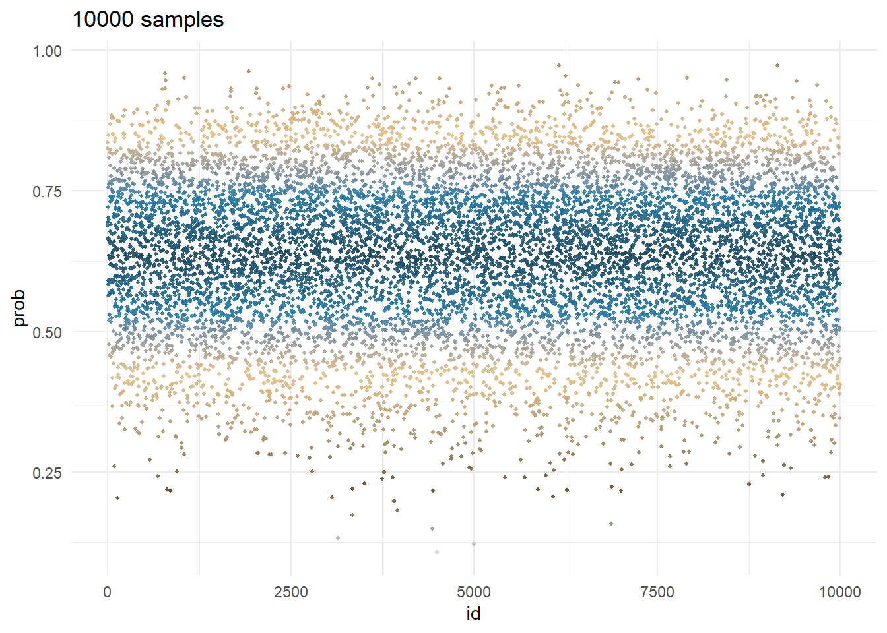

grid_size <- 1000
d <- tibble(
p_grid = seq(from = 0, to = 1, length.out = grid_size),
prior = rep(1, times = grid_size)
)3 Sampling the Imaginary
3.1 Sampling from grid-approximation posterior
We use the example from chapter 2.
The grid of \(p\) values has a grid size of \(grid\_size\).
The prior is uniformly distributed and so, as discussed in Overthinking box of section 2.3.3, p. 35, \(P(p)=\frac{1}{1-0}=1\).
and we calculate the posterior using the data. We compute the likelihood using the grid of priors from above, then compute the average likelihood which is the sum of the likelihood.
The posterior is defined in detailed in section 2.3.4, p. 37.
\[ \text{Posterior} = \frac{\text{Likelihood} \times \text{Prior}} {\text{Average Likelihood}} \]
Note the code stopifnot(sum(d$posterior) == 1), it is always a good idea to verify this . . . you could be surprised how often you miss the mark.
# the data, see page 28
data <- c("W","L","W","W","W","L","W","L","W")
n_success <- sum(data == "W")
n_trials <- length(data)
# compute the likelihood each value in the grid
d <- d %>%
mutate(
likelihood = dbinom(x = n_success, size = n_trials, prob = d$p_grid),
posterior = likelihood * prior / sum(likelihood)
)
str(d)tibble [1,000 × 4] (S3: tbl_df/tbl/data.frame)
$ p_grid : num [1:1000] 0 0.001 0.002 0.003 0.004 ...
$ prior : num [1:1000] 1 1 1 1 1 1 1 1 1 1 ...
$ likelihood: num [1:1000] 0.00 8.43e-17 5.38e-15 6.11e-14 3.42e-13 ...
$ posterior : num [1:1000] 0.00 8.43e-19 5.38e-17 6.11e-16 3.42e-15 ...# verify the posterior
stopifnot(sum(d$posterior) == 1)which gives the estimated posterior probability of \(p\) conditional on the data for each point of a grid.
Generate and visualize n_samples samples from the grid with the \(p\) values with their respective posterior probability \(p\) computed above.
Note: We use
dplyr::slice_samplebecausedplyr::sample_nis deprecated.
# generate n_sample samples, each sample uses a grid size = grid_size
n_samples <- 1e4
set.seed(3)
the_samples <- d %>%
slice_sample(n = n_samples, weight_by = posterior, replace = TRUE) %>%
mutate(id = seq_len(n_samples), .before = p_grid)
sum(the_samples$posterior)[1] 20.09125glimpse(the_samples)Rows: 10,000
Columns: 5
$ id <int> 1, 2, 3, 4, 5, 6, 7, 8, 9, 10, 11, 12, 13, 14, 15, 16, 17, …
$ p_grid <dbl> 0.5645646, 0.6516517, 0.5475475, 0.5905906, 0.5955956, 0.78…
$ prior <dbl> 1, 1, 1, 1, 1, 1, 1, 1, 1, 1, 1, 1, 1, 1, 1, 1, 1, 1, 1, 1,…
$ likelihood <dbl> 0.22455994, 0.27190272, 0.20966655, 0.24460869, 0.24799092,…
$ posterior <dbl> 0.0022478473, 0.0027217490, 0.0020987643, 0.0024485355, 0.0…visualize the sample of water proportion
# visualize the samples
cols = paletteer_d(palette="Manu::Kotare")
the_samples$p_grid_dev <- abs(mean(the_samples$p_grid) - the_samples$p_grid)
ggplot(data = the_samples, mapping = aes(x = id, y = p_grid, color = p_grid_dev)) +
geom_point(size = 0.75, alpha = 0.9) +
scale_color_gradientn(colors = cols) +
theme_minimal() +
theme(legend.position = "none") +
labs(title = sprintf("%d samples", nrow(the_samples)))
visualize the density
# show the p density
ggplot(data = the_samples, aes(x = p_grid)) +
geom_density(aes(y=..scaled..), color = "blue", size = 1, fill = "lightblue") +
theme_light() +
labs(title = sprintf("%d samples", nrow(the_samples)))3.2 Sampling to summarize
3.2.1 Intervals of defined boundaries
d %>%
filter(p_grid < 0.5) %>%
summarize(sum = sum(posterior))# A tibble: 1 × 1
sum
<dbl>
1 0.1723.2.2 Intervals of defined mass
We can use `skimr as follows
intrvl_skim <- skimr::skim_with(
numeric = skimr::sfl(
p10 = ~ quantile(., probs = 0.1),
p80 = ~ quantile(., probs = 0.8),
p90 = ~ quantile(., probs = 0.9)
),
append = FALSE)
intrvl_skim(the_samples, p_grid)| Name | the_samples |
| Number of rows | 10000 |
| Number of columns | 6 |
| _______________________ | |
| Column type frequency: | |
| numeric | 1 |
| ________________________ | |
| Group variables | None |
Variable type: numeric
| skim_variable | n_missing | complete_rate | p10 | p80 | p90 |
|---|---|---|---|---|---|
| p_grid | 0 | 1 | 0.45 | 0.76 | 0.81 |
quantile(the_samples$posterior, probs=0.9) 90%
0.002714426 the_samples %>%
skimr::skim()| Name | Piped data |
| Number of rows | 10000 |
| Number of columns | 6 |
| _______________________ | |
| Column type frequency: | |
| numeric | 6 |
| ________________________ | |
| Group variables | None |
Variable type: numeric
| skim_variable | n_missing | complete_rate | mean | sd | p0 | p25 | p50 | p75 | p100 | hist |
|---|---|---|---|---|---|---|---|---|---|---|
| id | 0 | 1 | 5000.50 | 2886.90 | 1.00 | 2500.75 | 5000.50 | 7500.25 | 1.0e+04 | ▇▇▇▇▇ |
| p_grid | 0 | 1 | 0.64 | 0.14 | 0.15 | 0.55 | 0.65 | 0.74 | 9.7e-01 | ▁▂▇▇▂ |
| prior | 0 | 1 | 1.00 | 0.00 | 1.00 | 1.00 | 1.00 | 1.00 | 1.0e+00 | ▁▁▇▁▁ |
| likelihood | 0 | 1 | 0.20 | 0.07 | 0.00 | 0.16 | 0.23 | 0.26 | 2.7e-01 | ▁▁▂▃▇ |
| posterior | 0 | 1 | 0.00 | 0.00 | 0.00 | 0.00 | 0.00 | 0.00 | 0.0e+00 | ▁▁▂▃▇ |
| p_grid_dev | 0 | 1 | 0.11 | 0.08 | 0.00 | 0.05 | 0.10 | 0.16 | 4.9e-01 | ▇▆▂▁▁ |
We can also customize skimr to obtain the HPDI as follows
hi_skim <- skimr::skim_with(
base = skimr::sfl(cnt = ~ n(),
miss = ~ sum(is.na(.))),
numeric = skimr::sfl(hpdi = ~ rethinking::HPDI(., prob = 0.89)
),
append = FALSE
)
hi_skim(the_samples, p_grid)| Name | the_samples |
| Number of rows | 10000 |
| Number of columns | 6 |
| _______________________ | |
| Column type frequency: | |
| numeric | 1 |
| ________________________ | |
| Group variables | None |
Variable type: numeric
| skim_variable | cnt | miss | hpdi |
|---|---|---|---|
| p_grid | 10000 | 0 | 0.43 |
| p_grid | 10000 | 0 | 0.86 |
We can get the HPDI from rethinking
# the HPDI
HPDI(the_samples$p_grid, prob = 0.5) |0.5 0.5|
0.5695696 0.7607608 # the PI
PI(the_samples$p_grid, prob = 0.5) 25% 75%
0.5475475 0.7427427 but the favorite method is with ggdist which we will use extensively from now on.
ggdist::mean_hdi(.data = the_samples, p_grid, .width = 0.5)# A tibble: 1 × 6
p_grid .lower .upper .width .point .interval
<dbl> <dbl> <dbl> <dbl> <chr> <chr>
1 0.640 0.570 0.761 0.5 mean hdi ggdist::mean_qi(.data = the_samples, p_grid, .width = 0.5)# A tibble: 1 × 6
p_grid .lower .upper .width .point .interval
<dbl> <dbl> <dbl> <dbl> <chr> <chr>
1 0.640 0.548 0.743 0.5 mean qi and we can illustrate the intervals with ggdist as follows
qtl <- c(0.5, 0.8, 0.95, 1)
x_breaks <- ggdist::mean_qi(.data = the_samples$p_grid, .width = qtl) %>%
select(y, ymin, ymax) %>%
pivot_longer(cols = c("y", "ymin", "ymax")) %>%
distinct(value) %>%
arrange(value) %>%
round(digits = 2) %>%
pull()
ggplot(the_samples, aes(x=p_grid)) +
stat_halfeye(aes(fill=stat(cut_cdf_qi(
cdf,
.width = qtl,
labels = scales::percent_format()
)))) +
scale_x_continuous(breaks = x_breaks) +
scale_fill_paletteer_d(palette = "Manu::Takahe", direction = -1,
na.translate = FALSE) +
theme_ggdist() +
theme(legend.position = c(0.1, 0.75)) +
labs(title = "Intervals of defined mass",
x = "p_grid", y = "prob of p_grid",fill = "quantiles")
3.2.3 Point estimates (loss function)
The linex loss function can be very useful in business analysis. This is to be investigated later.